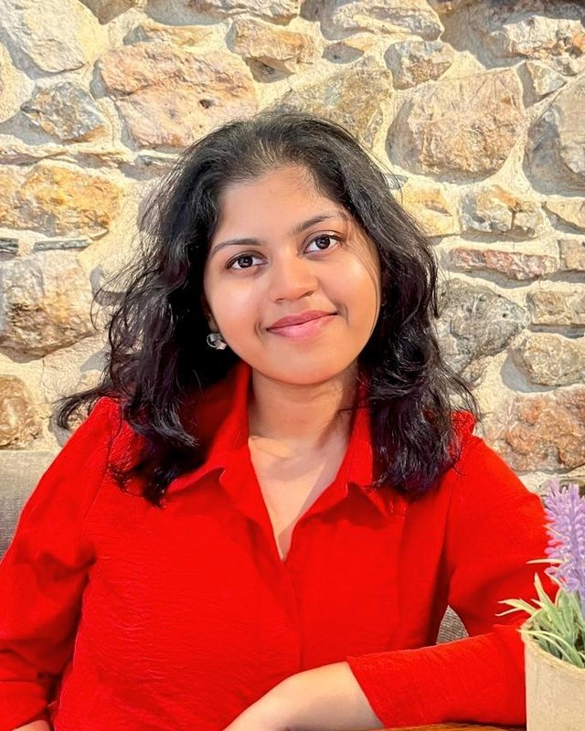
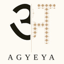

Arushi Waddepalli
Researcher · Software Engineer

Hi, I'm Arushi! I'm a third-year undergrad at IIIT Lucknow, and most of my work circles back to one question: when can we actually trust AI to check and act for us? Lately that has meant stress-testing LLMs that grade other LLMs (spoiler: they go easy on their own mistakes) and tracking how instructions quietly drift as tasks get handed from one agent to the next.
Apart from work, I love to read, travel and explore new cultures and cuisines!
News
- Selected for the Summer 2027 Software Engineering Internship at Atlassian.
- Our paper on LLM verifier reliability was accepted at two NeurIPS 2026 workshops: TAE and Who Verifies the Agents?
- Selected as an Adobe Student Insider, one of 100 students chosen from 19,000+ applicants in India.
- Named a Databricks Student Fellow, one of 38 students chosen from 7,000+ applicants across Asia-Pacific and Japan.
- Selected for the PayPal Career Academy for Tech, one of 47 students chosen from 13,000+ applicants.
- Earned the Hacktoberfest '25 Supercontributor badge.
Publications
-
Neither Blinding Nor a Jury, Neither Capability Nor Strategy: What Brings a Verifier to Reliability
Johnny Kozman, Arushi Waddepalli, Tilak Parajuli
NeurIPS 2026 Workshops: TAE (Can We Trust AI Evaluation?) and Who Verifies the Agents?
A controlled study of LLM verifiers across 64,800 verification calls. Blinding the judge to authorship does not remove self-preference, and larger or stronger judge panels do not catch more errors. Only an environment signal, such as executing the code, changes the picture.
Projects
-
TypeScript · VS Code API · OpenAI API
A VS Code debugging assistant in which debugger, critic, and tester agents retrieve relevant code, propose patches, validate them in a sandbox, and apply them with rollback. Evaluated on 20+ bugs using pass@k and fix@k, with ablations.
-
Python · scikit-learn · FastAPI · Next.js
Healthcare risk modeling on synthetic multi-site patient data without pooling records: federated training, digital-twin patient features, confounder-aware lifestyle analysis, and counterfactual intervention planning.
-
Python · Transformers · SHAP · React
Multimodal bias and misinformation detection: sentence- and article-level bias classification with token-level explanations (92% interpretability), Gemini-based neutral rewrites, and CNN/YOLO detection of manipulated media (84% accuracy).
-
IIITL Exam Cell Management System
Java · Spring Boot · MySQL · ReactThe campus exam-cell platform: OTP/JWT authentication, digitally signed PDF certificates, admin dashboards, and email and WhatsApp notifications. Cut response time by 23% and improved operational efficiency by 60%.
Skills
- Languages
- Python, C, C++, JavaScript, TypeScript, Java, SQL
- ML & Data
- PyTorch, TensorFlow, Keras, scikit-learn, Hugging Face Transformers, NumPy, Pandas, Matplotlib, Seaborn
- Web & Backend
- React, Next.js, Node.js, FastAPI, Flask, Streamlit, Spring Boot, Firebase, MySQL
- Tools
- Linux, Git & GitHub, VS Code, Jupyter, Google Colab, Kaggle
Curriculum Vitae
Experience
-
Software Engineering Intern (Incoming), Atlassian
Bangalore office
-
Research Fellow, SPAR
Mentor: Deeksha Dangwal (MATS, Cambridge ERA:AI)
- AI safety research on constraint drift through delegation hierarchies.
-

Student Researcher, Agyeya Research
Mentor: Dr. Pulkit Verma (IIT Madras)
- India's first AI safety program: a three-month research mentorship with a fully funded stay and workshop at IISc Bangalore.
-
Adobe Student Insider
Adobe's Partnership and Engagement Program
- One of the top 100 students selected from 19,000+ applicants across India.
-
Student Fellow, Databricks
Campus Ambassador and Mentorship Program
- One of 38 students selected from 7,000+ applicants across Asia-Pacific and Japan.
-
Undergraduate Researcher, University of Illinois Urbana-Champaign
Mentor: Dr. Darko Marinov
- Research on code generation by diffusion models and the trustworthiness and accuracy of the generated code.
-
Research Intern, IIT Bombay
Mentor: Dr. Asim Tewari
- Interdisciplinary machine learning research for the aviation industry.
-
Mentee, PayPal Career Academy for Tech
PayPal's Early-Career Mentorship Program
- One of 47 students selected from 13,000+ applicants across India.
- Sessions on personal branding, design thinking, tech for good, and storytelling, plus a tech bootcamp.